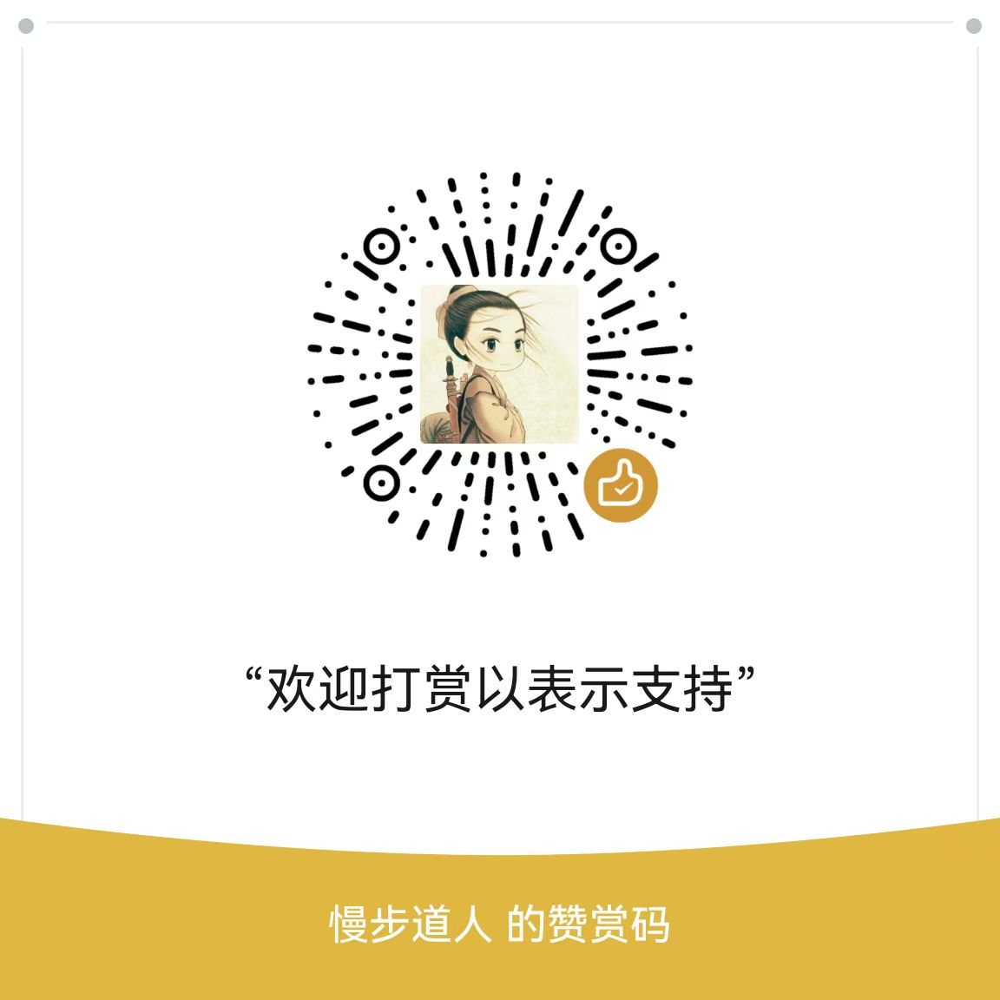

个人资料


半路出家的程序员，凭兴趣完全自学，比较注重基础，虽是纯野生，但许多方面不逊于科班出身的正规军。
十多年间，先后接触/学习了VB、Excel VBA、c/c++、c#、Delphi、Lazarus、python、go等编程语言，其中最熟悉的是pascal（即Delphi和Lazarus），其次是go；从事过桌面、服务器、嵌入式（单片机、PLC）的开发，最擅长的还数上位机开发；其它如安防、传感器、机械、机电、有限元、密码学、区块链等领域，也略有涉入。
捐赠打赏
如果内容对您有帮助，欢迎捐赠打赏以表示支持！
